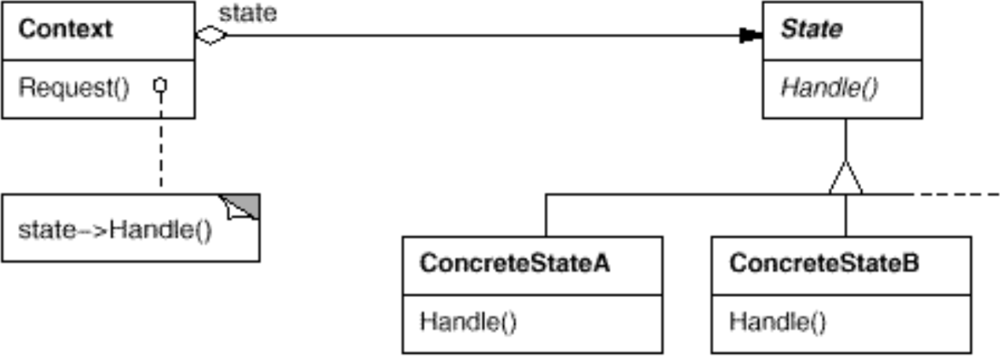
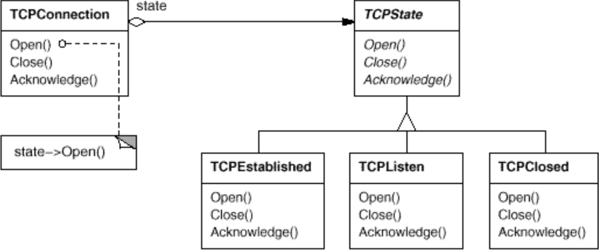

State è un object design pattern comportamentale.
Si supponga di voler implementare il protocollo TCP.
La sequenza di azioni da compiere per instaurare una connessione TCP è rappresentabile come un automa a stati finiti.
La classe TCPConnection deve gestire l’apertura della
connessione, la chiusura e le varie fasi intermedie.
Problema: la gestione di tutte le operazioni da compiere è complessa
e fortemente dipendente da uno stato. La classe
TCPConnection può diventare troppo grande e ci sono molti
statement condizionali da gestire.
class TCPConnection {
int state = 0;
public void open() {
if(state == 0) {
// Initialize connection
if(success) state = 1;
else state = -1;
}
else if(state == 2) // Code
else if(state == 3) // Code
}
public void close() {
// Code
}
}
Per risolvere questo problema possiamo definire una classe astratta
State che ha diverse sottoclassi. Ognuna di queste
sottoclassi gestisce le operazioni relative allo stato ed effettua la
transizione al prossimo stato. TCPConnection manterrà un
riferimento allo stato corrente.
La logica applicativa viene così suddivisa in più classi, il che rende il codice più facile da mantenere.


abstract class TCPState {
protected TCPConnection connection;
public TCPState(TCPConnection connection) {
this.connection = connection;
}
abstract public void open();
abstract public void close();
abstract public void acknowledge();
public void transition(TCPState state) {
connection.setState(state);
}
}
public class TCPListen extends TCPState {
public TCPListen(TCPConnection connection) {
super(connection);
}
public void open() {
// Open connection code
this.transition(new TCPEstablished(connection));
}
public void close { /*Code*/ };
public void acknowledge { /*Code*/ };
}
class TCPConnection {
private TCPState state;
public TCPConnection() {
state = new TCPListen(this);
}
public void setState(TCPState newState) {
state = newState;
}
public void open() {
state.open();
}
public void close() {
state.close();
}
public void acknowledge() {
state.acknowledge();
}
}